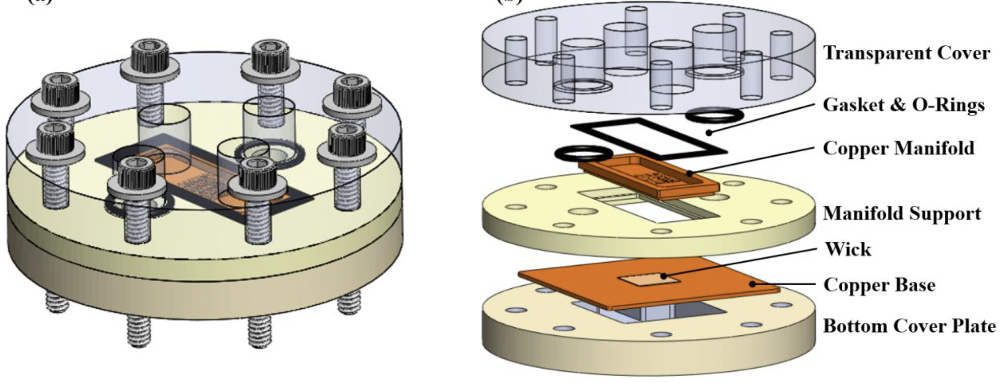
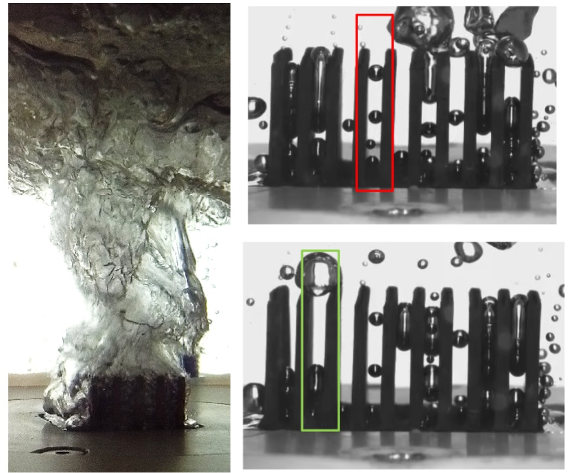
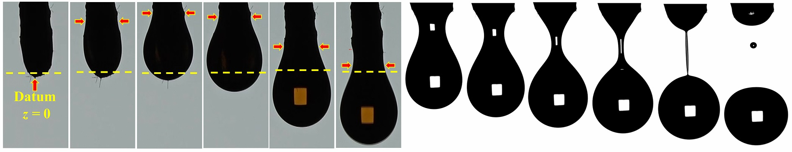
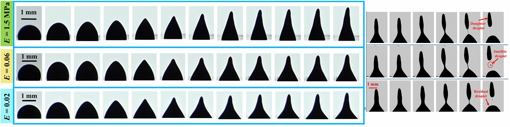
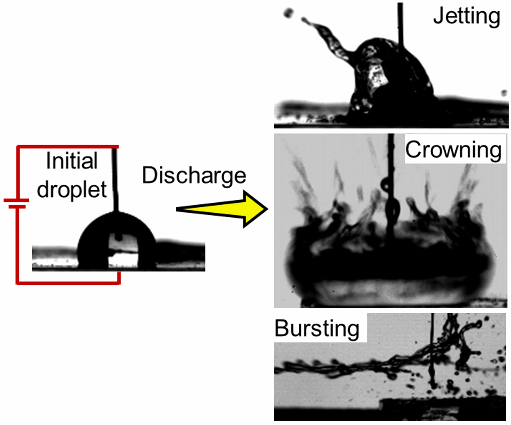
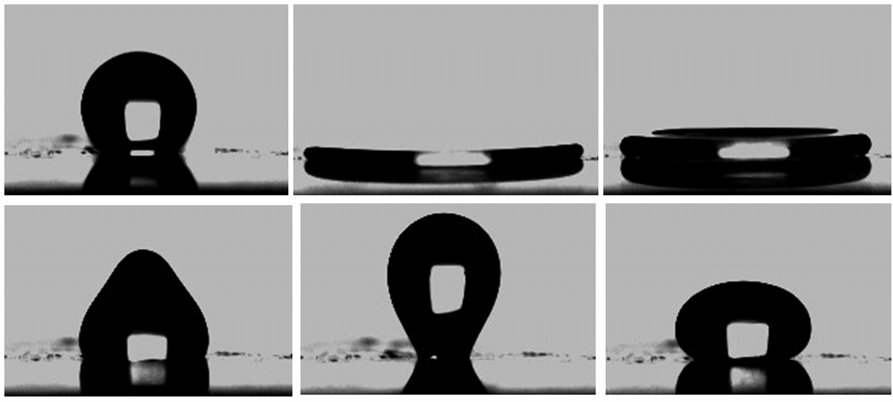
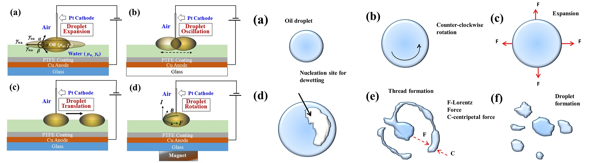
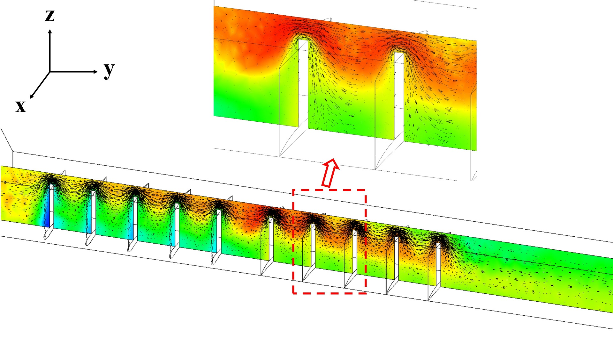

Data Center Thermal Management
While data is considered the new gold, data center energy consumption significantly affects the sustainability goals. To reduce overall energy consumption substantially, together with ARPA-E, we are on a mission to develop a novel immersion cooling facility for data centers and edge computing facilities.

Pump Assisted Capillary Cooler
We design and develop a pump-assisted capillary cooler for high-heat flux applications. The cooler comprises microtubes, bridging a compensation chamber above and a sintered wick below. The capillary pumping supplies the liquid during boiling in the wick, and the vapor generated is diverted through a separate path to inhibit its mixing with the liquid path. The designed cooler can go up to 1000 W/cm^2. 
Transport properties of Thin Metallic Wicks
Thin metallic wicks are used as evaporators in two-phase thermal management techniques in various devices, from loop heat pipes to vapor chamber heat spreaders. We design and develop a novel experimental method to characterize the transport properties of different sintered metal wicks. The goal is to get the correlations between the transport properties, which can be used as a guideline to design the targeted cooling devices for optimal performance.
Effect of Vapor Confinement in Immersion Cooling
Finned heat sinks are regularly used in two-phase immersion cooling devices to achieve high heat flux dissipation. However, the thermal performance of these types of devices strongly depends on the fin spacing. We develop a theoretical method to predict the effect of vapor bubble confinement on device thermal performance and subsequently validate the model with experimental datasets. The theoretical model can predict CHF and HTC of finned array heat sinks with any spacing directly from the testing data on a flat surface with similar surface characteristics. 
Direct Printing of 3D-microstructures on Boiling Surfaces
Direct printing of copper microstructures on boiling surfaces has been limited by the fabrication capability. We propose a novel fabrication technique involving two-photon polymerization (2PP) printing of polymer molds and subsequent electroplating. The method makes printing any complicated structures (nature-inspired) more straightforward, which may favor the boiling performance of an otherwise flat copper surface.
Yarn as a droplet-on-demand generator
Solid non-wettable nozzles are quite familiar to our daily routine. But when we allow the yarn to wick liquid from a reservoir and generate a droplet on-demand only under the effect of gravitational potential, a plethora of interesting dynamics are observed. Three distinct growth regimes are identified. Analysis of force balance results in unique scaling laws. The thread can act as a model for wettable porous nozzle. The results are fascinating. 
Interaction of a magnetic droplet and magnetic field
The interaction of sessile paramagnetic droplet and a non-uniform magnetic field leads to the deformation and subsequent disintegration of the parent droplet. However, replacing the underlying rigid substrate with soft surfaces can affect the paramagnetic droplet's deformation and splitting dynamics. This study reveals the effect of the underlying substrate's elasticity on the contact line dynamics during magnetowetting. Two distinct motions of the contact line are observed, namely, stick-slip and stick-brake. The results are fascinating. 
Interaction of a conducting droplet and dielectric discharge
Electric fields tend to deform both conducting and non-conducting droplets. However, confinement of electric discharge with a sessile droplet can lead to violent jetting, crowning, or bursting. We can tune in the extent of deformation and atomization of the droplet by altering the droplet conductivity, viscosity, or electric field. Such discharge mediated deformation and atomization stands apart from laser-induced droplet atomization. The results are fascinating. 
Interaction of a viscous droplet and superhydrophobic surface
Viscous droplets impacting superhydrophobic surfaces result in a plethora of dynamics, including rebound, splashing, partial pinning, or complete pinning, depending upon liquid viscosity and impact velocity. In this regard, we can characterize superhydrophobic surfaces by assessing the parameters mentioned above. We study the dynamic wetting properties of low-cost soot coated superhydrophobic surfaces by allowing viscous droplets to impact and compare with existing superhydrophobic surfaces. The results are fascinating. 
Electrowetting-on-Liquid (EWOL)
The wetting of a viscous droplet on a liquid surface yields fascinating results which includes oscillation, rotation and break-up. The scenarios and deformation dynamics depend on the electric field applied and liquid properties. 
Vortex wings induced enhanced mixing of two immiscible fluids in a microchannel
The role of vortex wings of different shapes (triangular, airfoil, rectangular) and aspect ratios in the enhancement of mixing efficiency of two immiscible liquids in a microchannel is studied with the help of 3D numerical simulations. 
Electrocoalesence of sessile liquid droplets on superhydrophobic surface (Ongoing work)
The effect of adhesive behavior and surface microstructure of a superhydrophobic surface on the electric field mediated merging and mixing of a pair of liquid droplet is studied extensively. The study has been extended to the in-situ preparation of gold nanoparticles in a Lab-on-chip device.